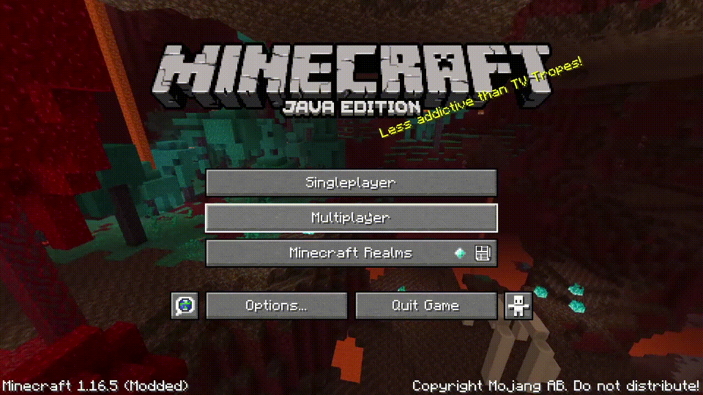

Op de Java Editie van Minecraft:
Op het startscherm click op Multiplayer dan add server. Bij de naam stop je een naam, bijvoorbeeld: Vicky's SMP. Bij de IP stop je play.varets.nl! Dan join je de net toegevoegde server.

Op de Bedrock Editie van Minecraft:
Op het startscherm click op Play en dan bovenaan click je op Servers. Daarna scroll je omlaag en vind je de knop Add Servers. In de IP typ je bedrock.varets.nl en bij de port: 19132. Daarna click je op play!